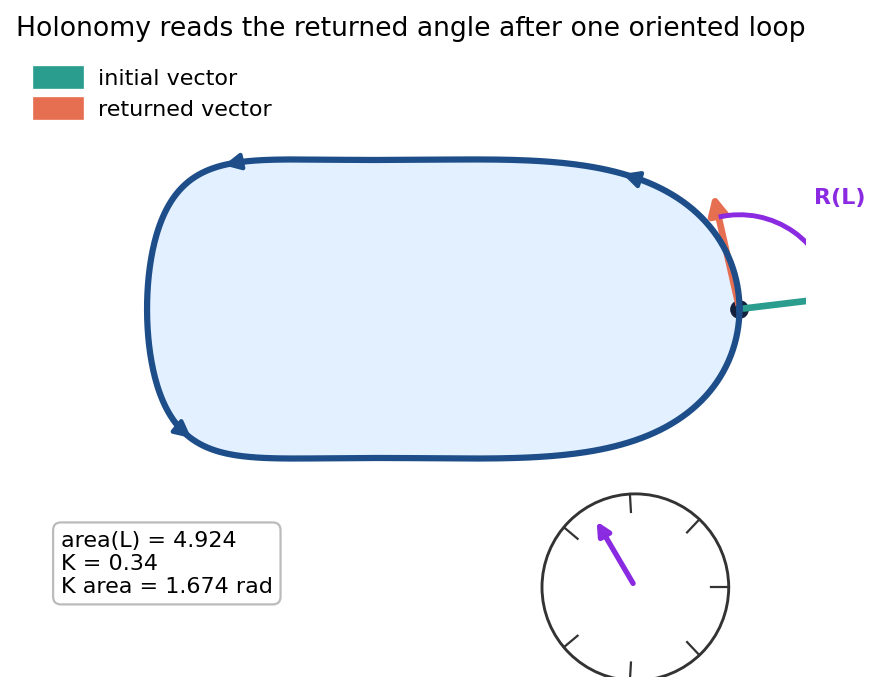

The measurement
Carry a tangent vector around an oriented loop $L$. Compare the returned vector with the initial vector in the same tangent plane.
Returned angle
$$R(L)=\angle(v_{\mathrm{start}},v_{\mathrm{return}})$$
Curvature accumulated
For nearly constant Gaussian curvature on the enclosed region, $R(L)\approx K\,\mathrm{area}(L)$.
